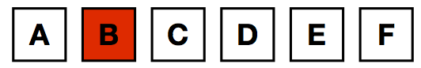

Les Castors ont organisé un tournoi d'échecs par équipe, et il ne reste plus que deux équipes qui s'affrontent en finale.
Il y a six Castors au total répartis en deux équipes de trois joueurs.
Ils se prénomment : Ahmed, Benjamin, Charlotte, David, Élise et Félix.
Chaque Castor joue une partie contre l'un des joueurs de l'autre équipe.
Quels sont les deux Castors qui sont dans la même équipe que Ahmed ?
Réponse B.
Pour trouver la solution, nous allons représenter chaque joueur par une case dans laquelle est inscrit l'initiale de son prénom. Nous associons une couleur à chaque équipe. L'équipe de Benjamin sera rouge. L'équipe adverse sera verte. Une case blanche signifie que nous n'avons pas encore pris de décision.
Au départ nous ne colorions que la case de Benjamin puisqu'il fait assurément partie de l'équipe rouge.
Puisque Benjamin joue contre Félix, nous pouvons colorier en vert la case de Félix.
Nous savons de plus que Élise et Félix sont dans la même équipe, donc la case d'Élise peut, elle aussi, être coloriée en vert.
Enfin, Charlotte et Benjamin sont dans des équipes différentes, donc Charlotte est elle aussi dans l'équipe verte de Félix.
L'équipe verte a maintenant ses trois joueurs. Les deux cases blanches sont des cases de joueurs de l'équipe rouge.
Conclusion: Charlotte, Élise et Félix sont dans la même équipe. Les autres Castors, Ahmed, Benjamin et David constituent l'autre équipe.
Les trois contraintes nous ont permis de déterminer directement la bonne composition des équipes sans passer par ce que l'on appelle une énumération exhaustive. Une telle énumération aurait demandé de considérer une à une chaque composition d'équipe possible et de progressivement éliminer chaque composition qui viole l'une des règles.
À la fin d'un tel calcul, il serait resté une seule composition d'équipe valide, la solution C. L'ordinateur possède une capacité de calcul phénoménale qui lui permet d'énumérer très rapidement un grand nombre de possibilités. Il serait donc tentant de penser qu'une recherche exhaustive est toujours à la portée d'un ordinateur suffisamment puissant. Il n'en est rien, certains problèmes nécessitent d'énumérer une telle quantité de cas qu'il est rapidement impossible de passer par une recherche aussi longue. Dans le cas présent, si au lieu de 3 joueurs par équipe nous avions constitué des équipes de rugby en coupant 30 joueurs en deux équipes de 15, nous aurions eu plus de 1 million d'équipes possibles à considérer !
En informatique, l'invention de bons algorithmes permet souvent de résoudre des problèmes de taille aussi gigantesque en des temps records. Ce n'est donc pas uniquement la puissance de calcul qui fait la force des ordinateurs mais aussi l'inventivité des hommes et des femmes qui les programment !